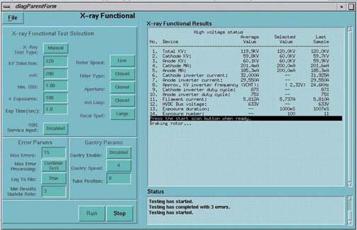
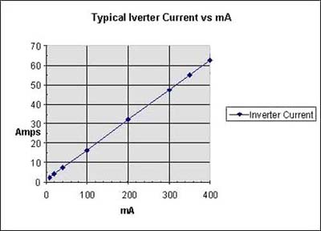
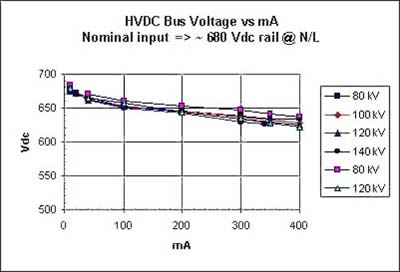
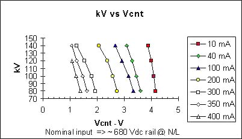
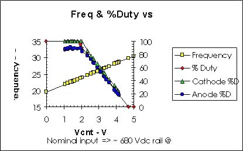
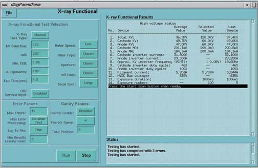

Proprietary to General Electric
Direction 5114043-800, Rev# 9
LightSpeed 3.X Service Methods (Advanced)
Proprietary to General Electric |
[SERVICE DESKTOP] -> [DIAGNOSTICS] -> [X-RAY GENERATION] -> [KV & MA (X-RAY)]
Illustration 1: kV & mA X-ray Screen

This diagnostic enables the collection of HV statistics during an x-ray exposure.
KV or mA errors are reported.
Symptom: KV out of tolerance (too low).
If one side has a low duty cycle while the other is high (25% or more difference), check the following:
Check for bad light pipe: Run the fiber optic test and check the inverter with the high duty cycle for a missing trigger.
Check that the IGBT connections are correct.
Check for missing feedback cable in the main harness.
The APPROXIMATE inverter current can be found in Illustration 2.
Verify the inverter frequency is approximately 19kHz if KV is low.
Replace the KV board if this value is closer to 30KHz
See the next section for more information.
There is a 180 sec. delay for HEMRC cooling between the start of this test to the start of another.
Tube fans and pumps will remain on for 60 minutes after the test has completed.
The Inverter operating frequency ranges from 19.5kHz (0.2V) to 31.5KHz (5V).
Run the HV functional diagnostic test if over currents, shoot-through, or other types of shorts are reported.
Cathode mA will always be higher than the anode mA for a Gemini tube (Metal casing). This is also true for the inverter currents.
Illustration 2: Inverter Current vs. mA

Illustration 3: HVDC Bus Voltage vs. mA

Illustration 4: kV vs. Vent

Illustration 5: Freq and Percent (%) Duty vs. Vent

X-RAY TROUBLESHOOTING
The screen below illustrates an open IGBT. The problem was induced by pulling an anode light pipe. Note the low anode AND cathode KV values, and the high duty cycle value for the anode inverter. The anode and cathode KV’s will track each other, which means the KV values reported will NOT indicate which node is failing. The key is the duty cycle. The anode is working much harder than the cathode, since one of the IGBTs is not being triggered. Also note the operating frequency. This is at the lowest value, indicating the KV control board is operating correctly to compensate for this problem.
Illustration 6: X-Ray Functional Screen
